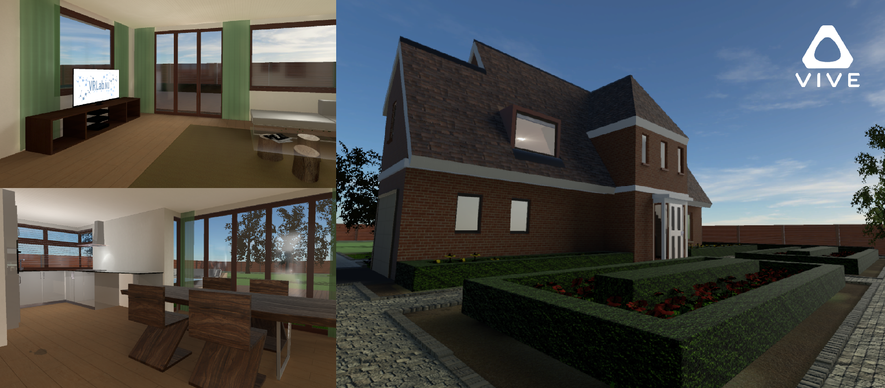

Portfolio
Who am I?
My name is Vince 't Hoen. Born in Honselersdijk in 1992. I love to design and bring those designs to life. I spend most of my free time designing video games, currently working on a VR game with one of my best friends. I also love watching TV shows, movies and play video games.
- Lorem
- Ipsum
- Dolor





Hire me
I am 3D artist currently working at Eibe benelux as a 3D designer. Always open for new job oppertunities, feel free to contact me ;).
-
Contact
Name: Vince 't Hoen
Year of birth: 1/6/1992
Location: Honselersdijk, The Netherlands
Mail: Vthoen@gmail.com
Phone: +31 6 39 75 64 81 -
Skills
- Blender
- Autodesk 3Ds Max
- Autocad 2D
- VR (HTC Vive)
- Chaos group Vray
- Allergorithmic substance painter
- Pixologic Zbrush
- Adobe Photoshop
- Adobe Illustrator
- Adobe After Effects
- Adobe Indesign
- Unity3D
- Affinity Designer
- Microsoft office software -
Experience
- Eibe benelux B.V.
Position; 3D Designer
- Esthie vormgeving & decoratie
Position; Decor designer & builder
- Rotterdam Gemeente Archief
Position; 3D Artist intern
- Haagse hogeschool
Position; 3D Artist intern -
Languages
- Dutch; Fluent in spoken and reading.
- English; Fluent in spoken and reading.